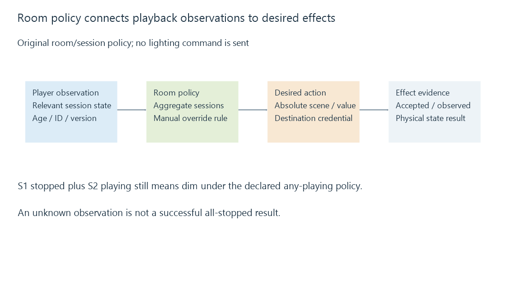

Playback events and dependable home automation
Playback-driven home automation maps particular player observations into room policy and physical effects, with multiple sessions and uncertain events requiring explicit state handling.
Playback-driven home automation connects media activity to another environment: dimming a room, changing a scene or updating a display. Emby documents webhooks as a way to supply such activity to an integration.
The difficult part is deciding which playback observation controls which room, then keeping the desired behavior coherent through duplicates, missed events and independent human actions.
A room needs a specific source
One user can play media on a television and a phone at the same time. Selecting all events for that user can therefore let a phone change the television room.
A mapping can identify the intended device/session relationship, room and applicable event types. Display names alone may not be stable unique keys.
An original normalized example maps TV-A to Living Room. Phone-B belongs to another policy even when both sessions have the same user.
More than one session needs an aggregation rule
Suppose a room can have two relevant sessions. The integration's declared policy is to dim while any relevant session is playing, and to restore its configured scene when none is playing.
| Session S1 | Session S2 | Desired room state under this policy |
|---|---|---|
| Playing | Stopped | Dim |
| Paused | Playing | Dim |
| Paused | Stopped | Restore |
| Stopped | Stopped | Restore |
| Unknown after an outage | Stopped | Unknown/reconciliation policy applies |
This is one teaching policy. A real room may choose to keep dimming during pause or apply another preference. The useful feature is that the decision comes from the relevant combined state, not from whichever single stop event arrived last.
If S1 stops while S2 continues, blindly restoring the room would violate the declared policy.
Duplicates should not invert the room
A command such as “toggle lights” has a different duplication effect from “set brightness to 20%.” Repeating a toggle can undo the intended first effect.
An absolute desired state can be repeated under a suitable device contract without intentionally changing direction each time. The destination still needs its own acceptance and completion evidence.

An accepted HTTP request to a lighting service does not prove the physical lamps reached the scene. Keep those observations separate if the integration needs to detect and recover a failed effect.
Old observations can arrive late
An original adapter model supplies a monotonically increasing version within one session:
Session S1, version 10: playing
Session S1, version 11: stopped
Delivery order: version 11 arrives, then version 10
Current stored version 11 rejects the older version 10 as stale.
The version rule is explicitly part of this fictional adapter contract. Do not assume every Emby webhook or WebSocket message supplies such a version or identical ordering semantics.
A timestamp alone may not supply the same guarantee: clocks, resolution and independent producers can complicate ordering. If the source has no suitable ordering contract, a current-state query and reconciliation rule can establish a newer observation.
Event identity detects repeats. Per-entity versioning, where supported, detects stale state. Those are different decisions.
Silence and absence are different states
If the event channel disconnects, the room does not know that every player stopped. If a session query fails, it did not successfully observe an empty session set.
A policy can retain the last known state for a limited interval, enter an explicit unknown state or query again through a supported path. The choice should be visible in the integration's behavior.
On restart, an in-memory session map may be empty while playback continues. Querying current state before applying an “all stopped” action prevents that empty local map from being mistaken for the server's current state.
Manual actions have their own authority
A person can brighten the room during playback. If the integration continually reapplies its scene without an override rule, it can fight that action.
A room policy can suspend automation after a manual change, allow an explicit override, or define another supported relationship. Restoring “the previous state” also needs an actual captured baseline; an integration cannot reliably invent it after the fact.
The recovered baseline can become stale if other automations change the room. Coordinate the intended ownership rather than assuming the playback integration is the only writer.
Recovery returns to observations
A dependable workflow identifies the source, reconciles relevant playback state, derives its room policy and verifies the desired effect where the destination permits that observation.
It can use webhooks or a continuing message channel for timely changes and polling for recovery. The tools have different observation properties; no single successful event delivery establishes every later stage.
The example verifier evaluates the room policy, repeated identities and stale versions on original data. It does not send lighting commands or operate a home-automation system.
See Also
- Playback sessions and current player state
- Event delivery, retries and duplicate processing
- Polling for updates and observation intervals
- Webhooks and pushed event notifications